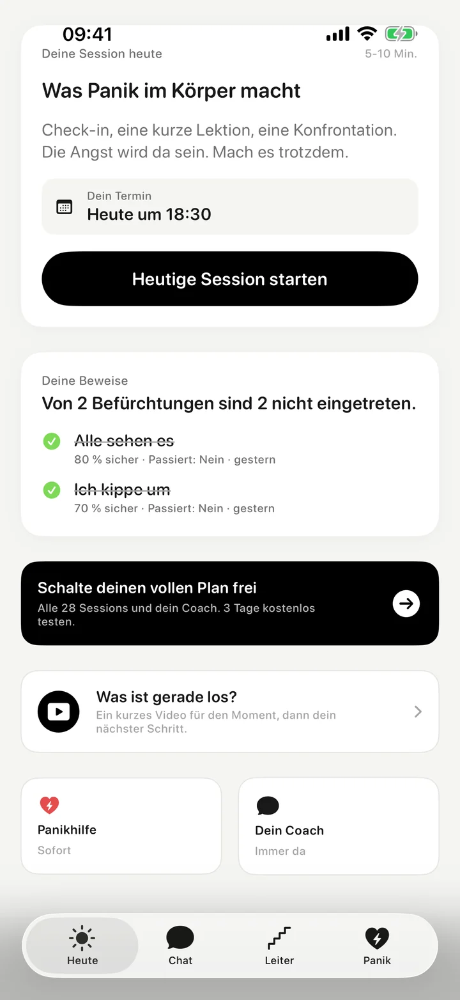
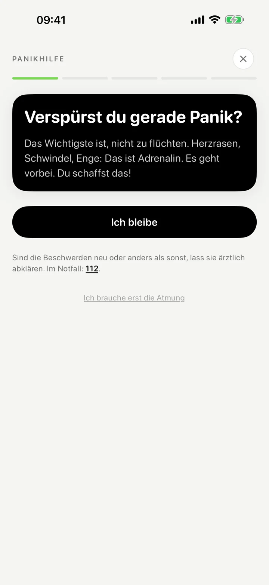
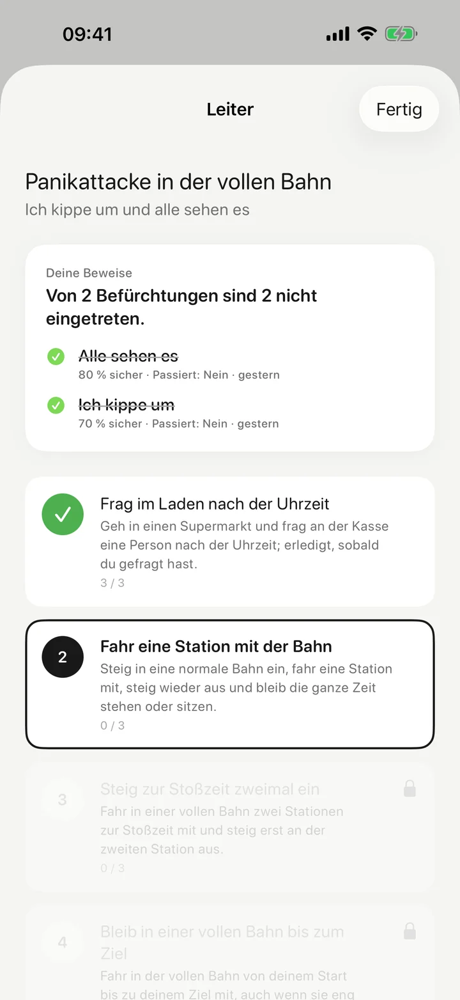
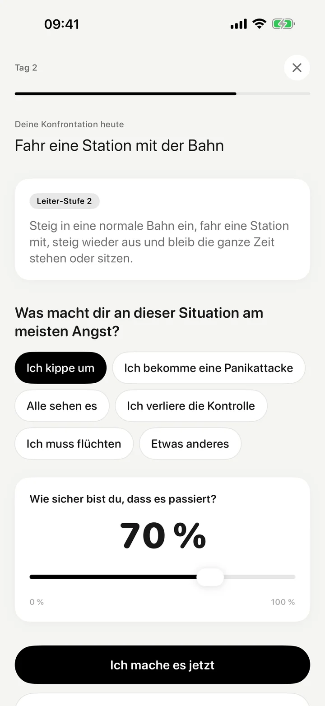
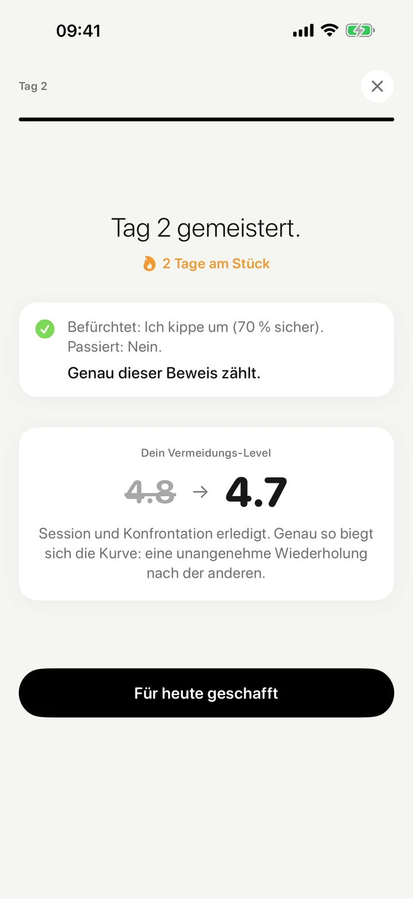
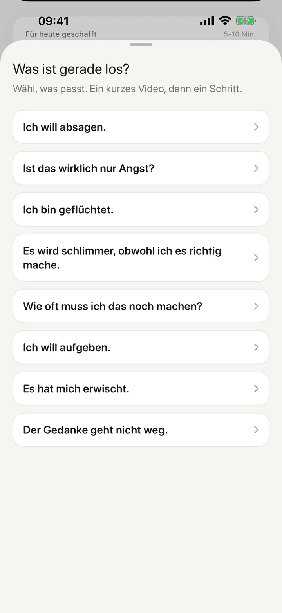
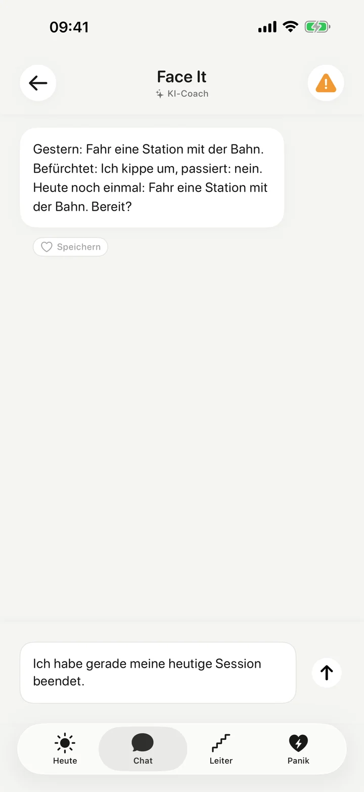

Bleiben statt beruhigen.
Beruhigungs-Apps holen dich aus dem Gefühl heraus. Face it hilft dir, in der Situation zu bleiben, bis du weißt, was wirklich passiert.
Selbsthilfe-Training für iPhone
Jeden Tag ein kleiner Schritt zurück in die Situationen, die du wegen der Panik vermeidest: Bahn, Supermarkt, Treffen.
5 bis 10 Minuten am Tag. Eine Konfrontation, so groß, wie du sie schaffst.
Panikhilfe immer kostenlos
Die ersten zwei Tage kostenlos · danach 3 Tage Test · jederzeit kündbar

Nach ein paar Panikattacken fürchtest du das Gefühl selbst. Also fängst du an zu vermeiden. Meistens so, dass es niemand merkt.
Jedes Mal wird es kurz besser. Genau das ist die Falle.
Dein Gehirn lernt: Ich bin nur davongekommen, weil ich geflüchtet bin. Beim nächsten Mal ist die Angst früher da.
Warum Beruhigen nicht reicht
Atem-Apps, Entspannung, „denk an was Schönes“. Das hilft für den Moment.
Aber dein Gehirn lernt daraus: Ich habe es nur geschafft, weil ich mich beruhigt habe. Beim nächsten Mal brauchst du die Beruhigung wieder.
Face it setzt woanders an: Du bleibst in der Situation und prüfst, ob das eintritt, was du befürchtest.
Warum Beruhigung die Angst füttert. Sergej, 1 Minute
Mit KI erstelltDie Videos zeigen Sergej als KI-Avatar, gesprochen nach seinem Skript.
Alle wollen dich beruhigen. Atem-Apps, Entspannungsübungen sagen oft: Denk an was Schönes. Und ich sag dir, warum das die Angst am Leben hält.
Wenn du dich in der Situation beruhigst, lernt dein Gehirn: Ich bin nur heil rausgekommen, weil ich mich beruhigt habe. Ohne die beruhigende Atmung hätte ich es nicht geschafft. Die Beruhigung wird zur Krücke, und die Angst bleibt der Chef.
Einwand eins: Aber ich halte das ohne nicht aus. Doch, du hältst es aus. Du hast es nur noch nie bis zum Ende probiert. Adrenalin baut sich von selbst ab.
Einwand zwei: Konfrontation macht es schlimmer. Am Anfang, ja. Wer aufhört zu vermeiden, spürt die Angst erst mal mehr. Das ist kein Rückschritt, das ist der Preis dafür, dass du endlich deine Komfortzone verlässt.
Einwand drei: Ohne Therapeut geht das nicht. Für viele ist Therapie der richtige Weg, und Face it ersetzt sie nicht. Aber worauf du nicht warten musst, ist der Wartelistenplatz, um heute eine kleine Konfrontation zu machen. Der Therapeut erledigt die Konfrontation ohnehin nicht für dich. Du kannst heute selbst einen ersten Schritt machen.
So funktioniert Face it
5 bis 10 Minuten am Tag. Du übst genau in den Situationen, die dir Angst machen.
Herzrasen, Schwindel, Enge. Die Panikhilfe sagt dir zuerst das Wichtigste: nicht flüchten. Dann benennst du, was du befürchtest, bleibst zwei Minuten und prüfst, was wirklich passiert ist.
Die Panikhilfe ist immer kostenlos, auch ohne Abo.

Deine Session: Check-in, eine kurze Lektion, eine Konfrontation aus deiner Angst-Leiter. Die Leiter hat fünf Stufen, von „kaum unangenehm“ bis zu dem, was du wirklich vermeidest. Passt eine Stufe nicht in dein Leben, sagst du es und bekommst eine, die passt.

Vor jeder Konfrontation schreibst du auf, wovor du am meisten Angst hast und wie sicher du dir bist. Danach siehst du schwarz auf weiß, ob es eingetreten ist.
Beispiel aus der App
BefürchtetIch kippe um, 70 % sicher
PassiertNein
So sammeln sich deine Beweise. Wenn dir die Angst erzählt, dass es diesmal anders läuft, schaust du nicht in deinen Kopf, sondern auf deine Beweise.


„Ich will absagen.“ „Ist das wirklich nur Angst?“ Für acht solche Momente gibt es in der App ein kurzes Video von Sergej und danach direkt deinen nächsten Schritt.
Dein Coach im Chat ist eine KI. Er kennt deine Leiter, deine Beweise und deinen Termin. Er fragt nach, statt dich zu beruhigen, und lenkt dich auf den nächsten Schritt.


Was Face it anders macht
Beruhigungs-Apps holen dich aus dem Gefühl heraus. Face it hilft dir, in der Situation zu bleiben, bis du weißt, was wirklich passiert.
Atemübungen helfen im Moment. Wenn du dich aber nur mit der richtigen Atmung sicher fühlst, ist sie eine neue Krücke. In Face it prüfst du, ob das Befürchtete eintritt.
Ablenkung verschiebt die Angst auf später. In Face it schaust du hin: Was befürchtest du, und ist es passiert?
Wer dahintersteckt
Ich kenne Panikattacken selbst. Und ich bin kein Therapeut.
Die Übungen in Face it kommen aus der Verhaltenstherapie: Du stellst dich in kleinen Schritten dem, was du vermeidest, und prüfst, ob das Befürchtete wirklich eintritt. Face it ersetzt keine Therapie.
In der App erkläre ich dir in kurzen Videos, warum Beruhigung die Angst füttert, was vor deiner ersten Konfrontation passiert und was du tust, wenn du absagen willst.
„Eins verspreche ich dir: Es wird unangenehm.“
Sergej, Gründer von Face it
Kostenlos ladenWarum du hier bist. Das erste Video in der App, knapp 1 Minute
Mit KI erstelltDie Videos zeigen Sergej als KI-Avatar, gesprochen nach seinem Skript.
Herzlich willkommen. Wenn du hier bist, dann kennst du das. Das Herz rast, dir wird schwindelig, du kriegst keine Luft. Und dann der Gedanke: Jetzt passiert was Schlimmes, ich halte das nicht aus.
Also flüchtest du. Oder du sagst ab, bleibst zu Hause, googelst deine Symptome, fragst zum dritten Mal, ob das wirklich nur Angst ist.
Und jedes Mal wird es kurz besser. Genau das ist die Falle. Dein Gehirn lernt: Ich bin nur davongekommen, weil ich geflüchtet bin. Und beim nächsten Mal kommt die Angst früher, stärker, in mehr Situationen.
Face it macht das Gegenteil. Keine Beruhigung, keine Ablenkung. Stattdessen jeden Tag eine Konfrontation, die du schaffst. Klein, aber echt. Vorher schreibst du auf, was deine größten Ängste sind. Danach schaust du nach, was wirklich passiert ist.
Ich bin Sergej, ich habe Face it gebaut. Eins verspreche ich dir: Es wird unangenehm. Und genau so fängt es an, besser zu werden und zu wirken. Los geht’s.
4,6 von 5 · 22 Bewertungen im deutschen App Store (Stand 24.09.2026)
„Endlich eine App, die mich nicht in Watte packt."
„Ich war skeptisch wegen der KI. Aber sie hat mich nach zwei Wochen besser verstanden als die meisten Menschen."
„Brutal ehrlich. Genau das was ich gebraucht habe."
Preis
Du fängst kostenlos an und entscheidest erst danach.
Monatlich
9,99 €pro Monat
Jährlich
59,99 €pro Jahr
entspricht 5 € im Monat
Preise im deutschen App Store. Kündigst du spätestens 24 Stunden vor Ende der drei Testtage, wird nichts abgebucht. Danach verlängert sich das Abo automatisch, wenn du es nicht spätestens 24 Stunden vor Ablauf kündigst. Verwalten und kündigen kannst du es jederzeit in den Einstellungen deiner Apple-ID.
FAQ
Die Panikhilfe ist für den Moment, in dem die Panik da ist. Sie sagt dir zuerst das Wichtigste: nicht flüchten. Dann benennst du, was du befürchtest, zum Beispiel „Ich kippe um“, bleibst zwei Minuten und prüfst, was wirklich passiert ist. Sie ist immer kostenlos, auch ohne Abo.
Sind die Beschwerden neu oder anders als sonst, lass sie ärztlich abklären. Im Notfall wähl die 112.
Für Menschen mit Panikattacken und Angst, die merken, dass Vermeiden ihr Leben kleiner macht: in vollen Bahnen, im Supermarkt, bei Treffen, beim Autofahren oder in engen Räumen. Face it ist ein Selbsthilfe-Training für iPhone.
In einer akuten Krise ist eine App nicht der richtige Ort: Ruf die 112 oder die Telefonseelsorge an (0800 111 0 111, kostenlos, rund um die Uhr).
Nein. Face it ist ein Selbsthilfe-Training und ersetzt keine Therapie. Die Übungen kommen aus der Verhaltenstherapie: Du stellst dich in kleinen Schritten dem, was du vermeidest, und prüfst, ob das Befürchtete wirklich eintritt. In der App findest du unter „Methode und Quellen“ die Leitlinien und Studien, auf denen das beruht.
Wenn deine Beschwerden anhalten oder dich stark einschränken, hol dir ärztliche oder psychotherapeutische Hilfe. Mehr dazu: App statt Therapie bei Angst: sinnvoll oder nicht?
Die Panikhilfe ist immer kostenlos. Die ersten zwei Tage sind kostenlos, ohne Abo. Danach testest du den vollen Plan 3 Tage kostenlos. Anschließend kostet er 9,99 € im Monat oder 59,99 € im Jahr.
Kündigen kannst du jederzeit in den Einstellungen deiner Apple-ID. Kündigst du spätestens 24 Stunden vor Ende des Tests, wird nichts abgebucht.
Dein Coach im Chat ist eine KI, kein Mensch. Auch die Stufen deiner Angst-Leiter schreibt eine KI. Dafür schickt Face it Daten an OpenAI, aber nur, wenn du in der App ausdrücklich zustimmst.
Geschickt werden deine Nachrichten und Sprachnachrichten an den Coach, deine Ängste und Leitern, deine Stimmung und dein Fortschritt. Das läuft über unseren Server zu OpenAI in den USA. OpenAI nutzt diese Daten nicht, um seine KI zu trainieren. Deine Zustimmung kannst du jederzeit in den Einstellungen unter „KI-Coach“ zurücknehmen.
Ohne KI laufen Sessions, Lektionen und die Panikhilfe ganz normal. Die Videos in der App zeigen Sergej als KI-Avatar, gesprochen nach seinem Skript. Alles Weitere steht in der Datenschutzerklärung.
Nein. Face it gibt es nur für das iPhone.
Durchziehen statt vermeiden
Fang heute mit einer kleinen Konfrontation an. 5 bis 10 Minuten, so groß, wie du sie schaffst.
Kostenlos ladenPanikhilfe immer kostenlos · die ersten zwei Tage kostenlos · Face it ersetzt keine Therapie